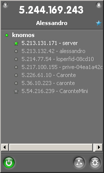
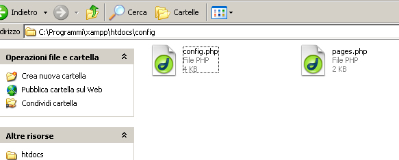
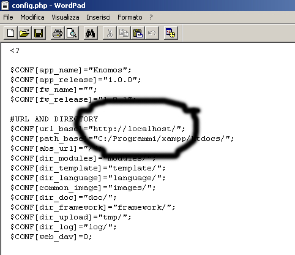

Usare Knomos con una rete privata virtuale è possibile! Basta scaricare dal sito http://www.hamachi.it Hamachi un piccolo software opensource per poter utilizzare il vostro gestionale anche fuori dallo studio.
Una volta installato correttamente hamachi si presenterà così ai vostri occhi !

Come potete vedere ogni macchina collegata alla vostra VPN ha un numero IP. Per l'installazione dovete teren presente quello della macchina ove è intallato Knomos.
A questo punto, per far funzionare Knomos da tutti i computers collegati alla VPN è oppoertuno accedere al file di configurazione (config.php) della cartella htdocs del sever Apache e sostituire il server "localhost" con l'indirizzo IP assegnato da hamachi.
Fatto questo sarà necessario digitare il vostro indirizzo ip sul browser e vedrete Knomos da qualsiasi postazione.

